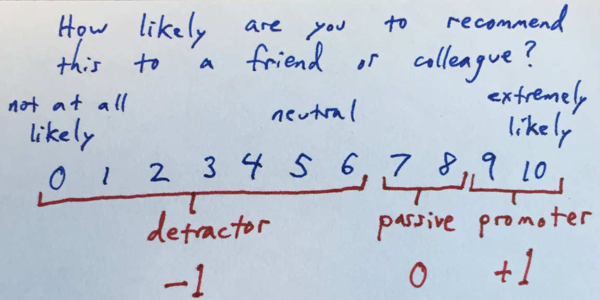
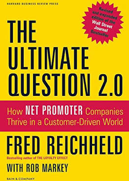

The Ultimate Question 2.0, by Reichheld
Monday April 13, 2020
I was interested in Net Promoter® score, so I read the book, which is a longer version of the original article. NPS is an interesting case study in simplicity, interpretability, paths to action, unintended consequences, and data collection.
Simplicity
Net Promoter is built around one question, now common in many variants, about whether you'd make a recommendation.

The single-question approach may help with response rate, but that isn't the only rationale.
"Traditional satisfaction surveys ... ask too many questions and inspire analysis instead of action." (pages ix-x)
Reichheld describes research supporting the use of a single question as a correlate of growth, and clustering analysis supporting the three response categories. Whether these are perfect is beside the point of focusing on some data about customer experience.
Interpretability
The Net Promoter score is explained as the percentage of promoters minus the percentage of detractors. This is equivalent to averaging a remapping of the 0 to 10 scale, but better at maintaining a meaningful interpretation.
"[This] made sense to frontline managers, who could relate to the goal of increasing the number of promoters and reducing the number of detractors more readily than increasing the mean of their satisfaction index by one standard deviation." (HBR)
This scoring method amounts to a kind of data visualization, focused on communicating and understanding. Whether or not it generates the best correlation coefficients with other quantities of interest, there's little doubt that it's instantly understandable.
Paths to Action
The Net Promoter score is quantitative, but the system is always supposed to include a second question: "What is the primary reason for your score?" This is one of the ways that NPS becomes actionable.
The open-ended follow-up avoids "the preconceived response categories of traditional customer-satisfaction questionnaires" (page 5) and invites the power of anecdote.
"Reading a comment from a customer promoter or detractor has far more impact than looking at a statistic on a monthly report from headquarters." (page 186)
The bottom-up application of NPS is intended to be non-anonymous and closed-loop: An employee might call detractors shortly after their responses come in to apologize and try to address issues immediately.
This kind of feedback helps to "Make NPS a tool to help people succeed (not just an evaluation metric)" (page 254) independent of statistics. The scores themselves can also be used more directly, but not without risk.
Unintended Consequences
NPS generates scores can be compared, incentivized, and then gamed: Goodhart's law.
NPS can also be used to evaluate employee satisfaction: "employee Net Promoter scores (eNPS)" (page 165). Like any data, it can be used for questionable purposes.
"When JetBlue first began its eNPS surveys, it discovered pockets of detractors. Upon deeper investigation, management learned that some of these unhappy employees were preparing a union-organizing campaign. Rapid intervention helped resolve the key issues before things reached that point." (page 168)
Data Collection
It's hard to get people to fill out surveys in the age of survey fatigue.
"Customers already receive too many survey requests, and as NPS spreads, their tolerance will diminish." (page 238 of 2011 version of 2006 book)
Reichheld recommends using phone surveys over register receipt surveys or email surveys.
"Phone surveys may not be the right long-term solution for your firm, but beware of defaulting to the cheapest alternative." (page 237)
Even with the shortest possible surveys, people are just sick of them, which is a challenge for getting good data.
Reichheld is a consultant who focuses on customer loyalty. Cynically, he wants to be known for "a full-fledged management system with an ethos that rivals Six Sigma in power" (front flap) and get his metric on balanced scorecards. Less cynically, he really wants companies to treat everyone well and avoid "bad profits" created by taking advantage of customers.

Otherwise unrelated quote:
"A bounced check cost [Charles Schwab Corporation] 82 cents, but the firm charged the client $40." (page 128)